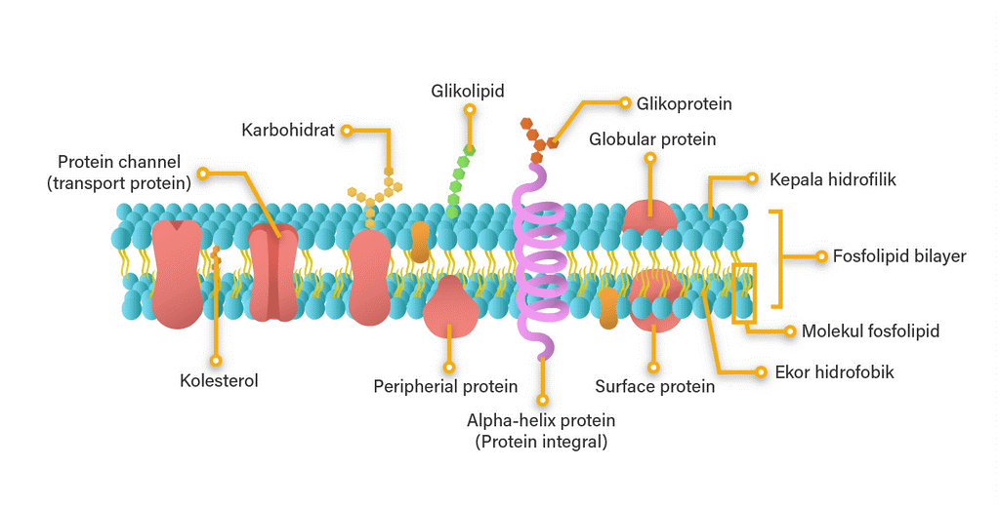
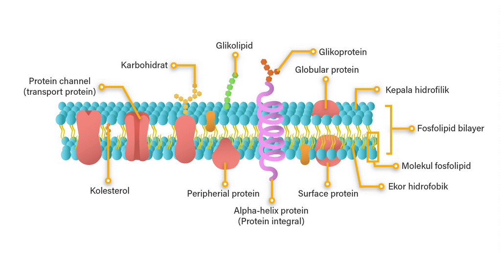
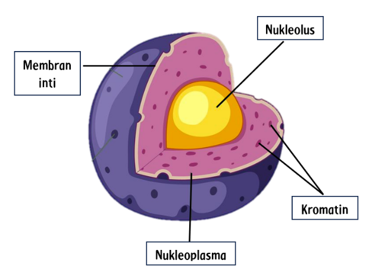
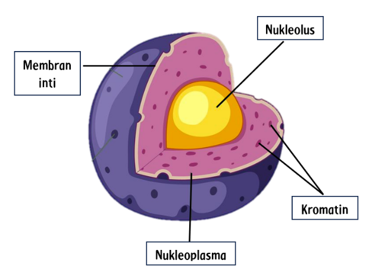
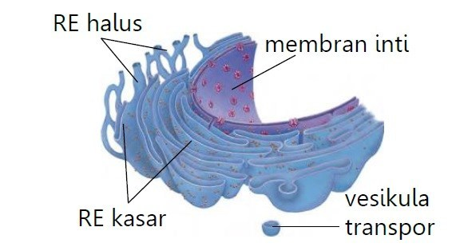
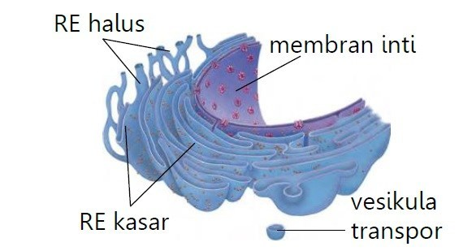
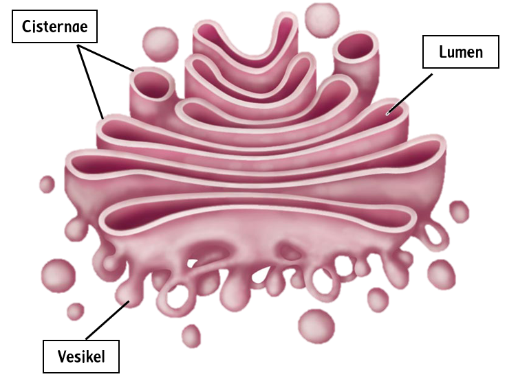
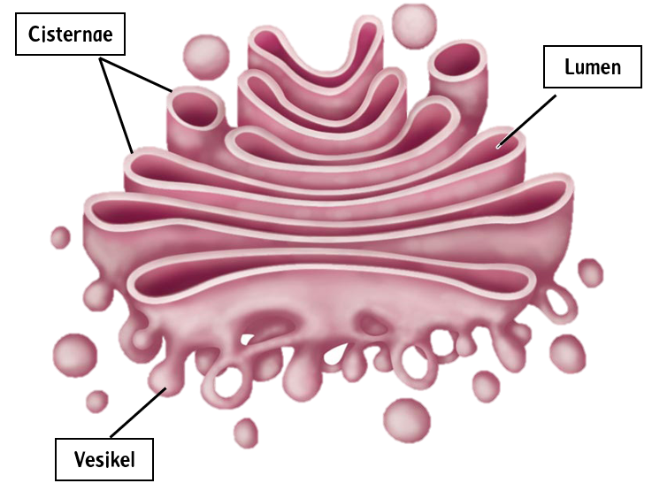

(Sumber : ruangguru.com)
Membran Sel
Membran sel adalah selaput yang terletak paling luar dan tersusun dari senyawa kimia lipid dan protein. Membran sel merupakan selaput yang membatasi sel dengan lingkungan di sekelilingnya dan bersifat semipermeabel, yaitu dapat menyeleksi molekul yang masuk ke dalam sel. Membran sel disebut juga membran plasma atau selaput plasma. Struktur membran sel terdiri atas:
1. Lapisan Ganda Fosfolipid
Fosfolipid: Molekul fosfolipid memiliki kepala hidrofilik (suka air) dan ekor hidrofobik (tidak suka air). Fosfolipid ini tersusun dalam dua lapisan dengan ekor yang menghadap ke dalam dan kepala yang menghadap ke luar, membentuk struktur yang disebut fosfolipid bilayer.
2. Protein Membran
- Protein Integral: Protein yang terbenam dalam lapisan ganda fosfolipid, beberapa di antaranya melintasi seluruh membran (transmembran).
- Protein Perifer: Protein yang terikat pada permukaan luar atau dalam membran sel.
3. Kolesterol
Ditemukan di antara fosfolipid, kolesterol membantu menjaga fluiditas membran pada berbagai suhu.
4. Karbohidrat
Terikat pada protein (glikoprotein) atau terikat pada lipid (glikolipid) pada permukaan luar membran sel, berperan dalam pengenalan sel dan komunikasi antar sel.
Fungsi Membran Sel
- Mengontrol keluar masuknya molekul dan ion melalui mekanisme transportasi aktif dan pasif, termasuk difusi sederhana, difusi terfasilitasi, osmosis, dan transpor aktif.
- Membantu dalam pergerakan zat-zat penting seperti nutrisi, ion, dan produk limbah masuk dan keluar dari sel.
- Memberikan perlindungan fisik dan struktur dasar untuk sel.
- Menjaga homeostasis dengan mengatur kondisi internal sel, seperti pH, konsentrasi ion, dan keseimbangan air (Campbell et al., 2010).
 

 

 
